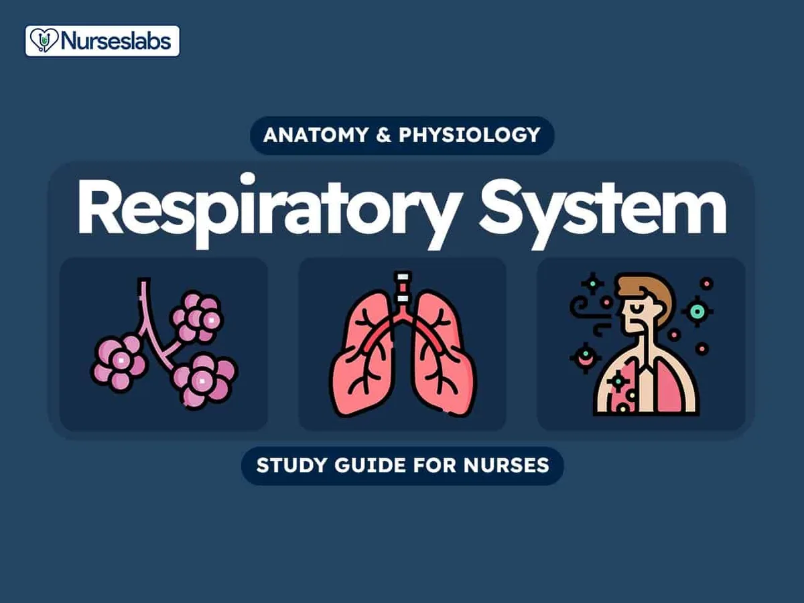

Expanded Nursing Uganda Explanation
Lower Respiratory Tract Infections (RTI) links cause, transmission, prevention, assessment and treatment support. Good nursing notes should include infection prevention, danger signs, adherence support and community health education.
Contents — 40 sections (tap to expand)
01 Respiratory Tract Infections (RTI)
This master guide provides an exhaustive look into Respiratory Tract Infections. It covers everything from the foundational anatomy and natural defenses of the lungs, to the specific clinical syndromes of the upper and lower respiratory tracts, and finally the rigorous laboratory protocols required to accurately diagnose these potentially life-threatening diseases.
02 1. Anatomy of the Respiratory System
To understand respiratory infections, we must first divide the respiratory tract into two main anatomical and functional compartments. The vocal cords roughly serve as the dividing line between the two.
03 A. Upper Respiratory System (URTI)
- Structures: Nose, pharynx (throat), and associated structures (middle ear, sinuses, tonsils).
- Primary Purpose: To take in environmental air, and then warm, filter, and moisten it before it reaches the delicate lungs. It acts as the body's natural HVAC (Heating, Ventilation, and Air Conditioning) system.
- Clinical Significance: This is the most common site of infections in the human body. Because it is the first point of contact with the outside world, it constantly encounters viruses and bacteria.
04 B. Lower Respiratory System (LRTI)
- Structures: Larynx (voice box), trachea (windpipe), bronchi, bronchioles, and alveoli (air sacs).
- Primary Purpose: Ventilation (moving air in and out) and true gas exchange (swapping oxygen for carbon dioxide in the blood).
- Clinical Significance: Infections here are generally much more severe, potentially life-threatening, and harder to clear than URTIs because any inflammation here directly compromises oxygenation.
Specific pathogens love specific anatomical sites due to distinct cellular receptors and temperature preferences. For example:
- Pharynx: Adenoviral pharyngitis, Strep throat, Diphtheria.
- Larynx/Epiglottis: Laryngitis, Epiglottitis.
- Lungs/Alveoli: Pneumonia, Tuberculosis, Histoplasmosis, Coccidioidomycosis, RSV, Legionnaire's disease.
05 Why the Divide Matters
When a patient presents to the ER with a cough, the doctor's immediate goal is to determine if it's an URTI or an LRTI. URTIs are usually viral, benign, and sent home with supportive care. LRTIs (like pneumonia) often require chest X-rays, blood work, IV antibiotics, and hospital admission. Differentiating the two saves lives and resources.
06 A. The Common Cold (Infectious Rhinitis)
The common cold is a mild, self-limiting viral infection of the upper respiratory mucosa.
- Causative Agents: Rhinovirus (most common, accounting for 30-50%), Coronaviruses, RSV (Respiratory Syncytial Virus), and Parainfluenza virus.
- Epidemiology: Highly common in the cooler, winter months in temperate climates, and during the rainy season in tropical areas (like Uganda).
- Presentation: Rhinitis (runny, stuffy nose), mild headache, and conjunctival suffusion (red, watery eyes).
Clinical Pearl - The Danger of Antibiotic Misuse: Because these are exclusively viral, antibiotics are completely useless. Treatment is purely symptomatic (decongestants, rest, hydration). Overprescribing antibiotics for the common cold is the leading driver of global antibiotic resistance. Educating the patient is the most important treatment!
07 B. Pharyngitis / Tonsillitis
An inflammatory syndrome of the pharynx (sore throat) caused by various microorganisms.
- Causes: The vast majority are viral (Rhinovirus, Coronavirus, Adenovirus, Herpes Simplex Virus, Parainfluenza, Influenza, Coxsackievirus, Epstein-Barr virus, Cytomegalovirus). It often occurs as part of a broader common cold or flu syndrome.
- Bacterial Causes: The most significant bacterial cause is Group A Streptococcus ( Streptococcus pyogenes ), accounting for 5% to 20% of cases. Other rare bacterial causes include Neisseria gonorrhoeae (from oral sex) and Corynebacterium spp. (Diphtheria).
08 Strep Throat & The Centor Criteria
A 10-year-old presents with a sudden, severe sore throat, fever, and swollen neck lymph nodes, but NO cough. Looking in the mouth, you see white exudates (pus) on the tonsils.
The Centor Criteria is used by doctors to score the likelihood of Bacterial Strep Throat vs a Viral sore throat:
- Absence of cough (+1 point)
- Swollen, tender anterior cervical lymph nodes (+1 point)
- Temperature > 38°C / 100.4°F (+1 point)
- Tonsillar exudate or swelling (+1 point)
- Age 3-14 (+1 point)
A high score justifies a rapid strep test or empirical antibiotics. This is classic Group A Strep. We must treat this with Penicillin not just to cure the throat, but to prevent a dangerous autoimmune complication later known as Rheumatic Fever , which can permanently damage heart valves!
09 C. Epiglottitis
A severe, life-threatening inflammation of the epiglottis (the flap that covers the windpipe during swallowing). If it swells too much, it completely blocks the airway, suffocating the patient.
- Epidemiology: Usually occurs in cooler months. Historically affected young children (ages 2-7).
- Causative Organisms: Haemophilus influenzae type b (now rare due to the highly successful Hib vaccine!), Streptococcus pyogenes , and Pneumococcus.
- Clinical Presentation: The child will appear highly toxic, drooling (because it hurts too much to swallow their own saliva), and leaning forward in a "Tripod Position" to keep their airway open. A lateral neck X-ray will reveal the classic "Thumbprint Sign" (the swollen epiglottis looks like a thumb pressing into the airway).
Diagnostic Rule (Life or Death): Blood culture is the gold standard. NEVER stick a throat swab or tongue depressor into the mouth of a child suspected of having epiglottitis! Doing so can trigger a reflex spasm that snaps the airway completely shut, killing the child instantly in the clinic. Secure the airway first (often in the OR) before any examination.
10 D. Otitis Media (Middle Ear Infection)
Inflammation of the middle ear space, located right behind the eardrum (tympanic membrane or TM).
Anatomical Deep Dive: Why Kids Get It More: Children are far more prone to Otitis Media than adults because a child's Eustachian tube (the tube connecting the middle ear to the throat) is shorter, narrower, and more horizontal. This makes it incredibly easy for bacteria from the throat to crawl up into the ear, and very difficult for the ear to drain fluid out.
- Clinical Confirmation: Requires an acute onset of symptoms.
- Signs of Effusion (fluid build-up): Using a pneumatic otoscope, a doctor will see a bulging Tympanic Membrane, limited mobility of the eardrum when puffing air at it, an air-fluid level, or otorrhoea (pus draining out if the eardrum ruptures).
- Symptoms: Erythema (redness) of the TM, and distinct, severe otalgia (ear pain) that often interferes with a child's sleep. The child may constantly tug at their ear.
- Causative Organisms: Streptococcus pneumoniae (Most common)
- Haemophilus influenzae
- Moraxella catarrhalis
11 E. Sinusitis
Bacterial or viral infection of the paranasal sinuses. It is classified strictly by timeframes:
- Acute Bacterial Sinusitis: Infection lasting less than 30 days, where symptoms resolve completely afterwards.
- Subacute Bacterial Sinusitis: Lasting between 30 and 90 days, resolving completely.
- Recurrent Acute Bacterial Sinusitis: Multiple episodes, each lasting less than 30 days, separated by asymptomatic intervals of at least 10 days.
- Chronic Sinusitis: An episode lasting longer than 90 days. Patients have persistent residual symptoms like chronic cough, rhinorrhoea (runny nose), or nasal obstruction. Even if "new" acute symptoms resolve, underlying residual symptoms do not.
Clinical Sign - "Double Sickening": Viral sinusitis is common. But if a patient has a viral cold, starts to get better, and then on day 7 suddenly spikes a high fever with severe facial pain and purulent green nasal discharge, this is known as "double sickening." It indicates a bacterial superinfection has taken hold in the trapped sinus fluid.
Pathogens: Exactly the same top three as Otitis Media! Streptococcus pneumoniae (causes 30% of cases), Haemophilus influenzae , and Moraxella catarrhalis .
12 F. Specimen Collection for URTIs
- Common Samples: Throat swabs, nasopharyngeal swabs/washes, and oral cavity scrapings.
- Lab Protocol: Routine throat swabs are automatically screened only for Group A Streptococci. If a doctor suspects something else (like Neisseria gonorrhoeae or Bordetella pertussis /Whooping cough), they must request it specifically so the lab uses special agar plates (e.g., Regan-Lowe or Bordet-Gengou agar for Pertussis).
13 3. Lower Respiratory Tract Infection (LRTI) Syndromes
LRTIs include conditions like Bronchitis (airway inflammation), Bronchiolitis (small airway inflammation, uniquely common in infants under 2, often driven by RSV), Pneumonia (infection of the alveoli/lung tissue itself), and Lung abscesses (pockets of pus/dead tissue in the lung).
14 Clinical Presentation of LRTIs
- Acute Systemic Symptoms: Fever, chills, back pain, myalgias (muscle aches), arthralgias (joint pain), headache, malaise, nausea, and vomiting.
- Chest-Specific Symptoms: Deep cough, chest pain (often pleuritic—hurts when taking a deep breath), rales (crackling sounds heard via stethoscope representing fluid in the alveoli), wheezing, and a noisy chest.
- Severe Signs: Characteristic white patches (infiltrates/consolidation) on chest X-rays, and increasing respiratory distress (which may become so severe the patient requires mechanical ventilation/life support).
15 Why does Pneumonia cause "Pleuritic" Chest Pain?
Interestingly, the actual lung tissue (parenchyma) has absolutely zero pain receptors. You cannot feel pneumonia growing inside the lung. However, the pleura (the thin membrane wrapping around the outside of the lungs and lining the inside of the rib cage) is densely packed with pain nerves. When the lung infection reaches the edge of the lung and inflames the pleura (Pleurisy), the two inflamed pleural layers rub together like sandpaper every time the patient takes a deep breath, causing sharp, stabbing, "pleuritic" pain.
Diagnosis: Heavily depends on the clinical presentation and the age of the patient, supported by minimum laboratory (sputum culture, blood tests) and radiologic (X-ray) investigations.
16 4. Pathogenesis and Respiratory Defenses
The lungs are naturally sterile. The development of a pulmonary infection indicates a failure somewhere. It means either: 1) A defect in the host's immune defenses, 2) Exposure to a massively virulent (aggressive) microorganism, or 3) An overwhelming inoculum (breathing in a massive dose of bacteria at once).
17 Routes of Entry
- Aspiration: Breathing in resident flora (normal bacteria) from the upper airway/mouth down into the lungs (especially while asleep or unconscious). Microaspiration happens in small amounts to everyone during sleep, but the immune system handles it. Macroaspiration happens when someone vomits and inhales a massive volume of fluid/bacteria, often leading to deadly pneumonia.
- Inhalation: Breathing in aerosolized infected droplets from the air (e.g., someone coughing TB or COVID-19).
- Metastatic Seeding: Less frequent. Bacteria traveling through the bloodstream from an infection elsewhere in the body (like a heart valve infection/endocarditis) and landing in the lungs.
18 The Respiratory Defense Systems
The body has layers of defenses: anatomic barriers, humoral (antibody) immunity, cell-mediated immunity, and phagocytes.
19 Upper Airway Filters
- Physical Barriers: Air is filtered in the anterior nares (nostrils). Large particles greater than 10µm are trapped by nose hairs and removed.
- Mucociliary Escalator: Ciliated epithelium (cells with tiny sweeping hairs) and thick mucus trap larger particles. The hairs sweep the dirty mucus upward toward the throat to be swallowed or spit out. Cough reflexes violently expel large particles.
- Chemical & Fluid Defenses: In the oropharynx, the constant flow of saliva, the natural sloughing (shedding) of skin cells, local complement proteins, and antimicrobial peptides/enzymes destroy or wash away pathogens. Mucosal IgA (an antibody) is highly present and provides antibacterial and antiviral activity.
- Bacterial Counter-attack: Clever microorganisms use adhesins (sticky proteins) to aggressively bind and colonize the URTI epithelia, preventing themselves from being washed away.
20 Lower Airway (Alveolar) Defenses
Microorganisms with very small diameters (0.2 to 2µm) can bypass the mucus and reach the terminal alveoli (deepest air sacs). Importantly, no mucociliary apparatus (no sweeping hairs) exists down here!
- Chemical Opsonins: The fluid lining the alveoli contains surfactant, IgG antibodies, fibronectin, and complement. These act as "opsonins"—they coat the bacteria, acting like a bright neon sign that says "EAT ME" to immune cells.
- Alveolar Macrophages: The resident guard cells of the lungs. They patrol the alveoli and eat (phagocytose) the opsonized bacteria.
- Inflammatory Cascade (The Cytokine Storm): If the number of bacteria overwhelms the macrophages, the macrophages secrete cytokines and chemokines (chemical alarm signals). This triggers a massive inflammatory response, recruiting millions of neutrophils from the blood into the lungs. The blood vessels leak fluid into the alveoli to help the neutrophils cross over, filling the air sacs with pus and fluid. This entire pathological process is what we call Pneumonia .
21 Impaired Respiratory Defenses
Why do some people get pneumonia easily? Impaired defenses result from:
- Altered Consciousness: Sleep, seizures, coma, drug overdoses, or general anaesthesia. If you are unconscious, you lose your gag and cough reflexes. You silently inhale your own saliva (and mouth bacteria) into your lungs.
- Alcohol Intoxication: Alcohol paralyzes the white blood cells and dulls the gag reflex.
- Viral Infections: A prior flu virus destroys the ciliated epithelial cells, leaving the lungs wide open for a secondary bacterial pneumonia (like S. aureus ).
- Iatrogenic manipulations: NG (Nasogastric) tubes or breathing tubes physically hold the airway open, providing a slide for bacteria to bypass the vocal cords.
- Old age: Weakened immune systems and weaker cough muscles.
- Congenital Defects: Kartagener’s syndrome: A genetic disease where the patient's cilia (sweeping hairs) are paralyzed from birth. They suffer constant respiratory infections.
- Cystic Fibrosis: A mutation in the CFTR chloride channel causes respiratory mucus to become incredibly thick and sticky, paralyzing the mucociliary escalator and acting as a breeding ground for Pseudomonas aeruginosa .
22 A. Community Acquired Pneumonia (CAP)
Pneumonia caught out in the general public. We generally divide these into "Typical" (Classic lobar pneumonia, severe symptoms) and "Atypical" (Walking pneumonia, milder symptoms, extra-pulmonary manifestations).
Pathogens include:
- Streptococcus pneumoniae (The absolute #1 cause globally of Typical CAP).
- Haemophilus influenzae & M. catarrhalis
- Atypicals: Legionella species (often from contaminated AC water towers), Mycoplasma pneumoniae (classic "walking pneumonia" in young adults), Chlamydia species .
- Klebsiella species: Common in alcoholics and diabetics. Clinical Pearl: Klebsiella has a massive sugar capsule that destroys lung tissue and causes bleeding, leading to the coughing up of thick, bloody, "currant jelly" sputum .
- Enteric gram-negative bacilli
- Staphylococcus aureus: (Often follows a viral flu).
- Influenza viruses
23 B. Nosocomial (Hospital-Acquired) Pneumonia
Pneumonia caught after being admitted to the hospital (often via ventilators). These bugs are notoriously resistant to antibiotics.
- Enterobacteriaceae: K. pneumoniae , E. coli , Enterobacter spp , Serratia marcescens .
- Pseudomonas aeruginosa: Extremely dangerous, heavily drug-resistant, common in ICU ventilator patients.
- Staphylococcus aureus: (Often MRSA - Methicillin Resistant).
- In immunocompromised hosts (HIV/AIDS, Chemo patients), normally harmless fungal and viral pathogens play a massive role in causing disease.
24 C. Lung Abscess
Occurs when a microbial infection is so severe it causes actual necrosis (death/rotting) of the lung parenchyma (tissue), producing cavities. These cavities often break open into larger airways, causing the patient to cough up foul-smelling, highly purulent (pus-filled) sputum.
- Primary Cause: Commonly caused by oral anaerobes following an aspiration event (e.g., passing out drunk and inhaling vomit). Note: Inhaling pure gastric acid also causes "Mendelson's syndrome," a severe chemical pneumonitis that destroys lung tissue even before bacteria take over.
- Other Causes: Staphylococcus aureus , Pseudomonas aeruginosa , enteric gram-negative rods, Pasteurella multocida (from animal bites), Burkholderia , Haemophilus influenzae (types b and c), Legionella , Group A strep, Streptococcus pneumoniae , Streptococcus milleri group , Nocardia , Rhodococcus , Corynebacterium pseudodiphtheriticum , and Actinomyces .
25 A. Specimen Collection
Sputum is the most commonly collected specimen.
- How to collect: The patient should stand or sit upright in bed. They must take a very deep breath to fill the lungs, empty it, then take another and cough as hard and as deeply as possible from the chest (not just clearing the throat).
- The sputum brought up must be spit into a wide mouth, screw-capped container. Tighten the cap and send it immediately to the lab.
- Induced Sputum: If a patient is too weak or dry to produce sputum, a healthcare worker assists them. The patient breathes in aerosolized droplets of a hypertonic solution (15% sodium chloride and 10% glycerin) for about 10 minutes. This draws water into the airways and forces a productive cough, avoiding invasive procedures like bronchoscopy.
- Other Specimens: Bronchoalveolar lavage (BAL), Bronchial washes, Transbronchial biopsies, Tracheal aspirates.
26 B. Transportation and Rejection Rules
- Sputum must be transported to the lab in <2 hours . If a delay is anticipated, it MUST be refrigerated (otherwise normal mouth bacteria will overgrow and ruin the sample).
- Handle all samples using universal precautions (treat every sample as if it has TB or COVID).
- Quantity: Sputum of less than 2ml should NOT be processed unless it is obviously purulent (pure pus).
- Only 1 sputum sample per 24 hours is accepted by the lab to avoid redundant testing.
27 CRITERIA FOR REJECTING SAMPLES (Exam Alert!)
The lab will throw the sample in the trash if:
- Mismatch of information on the label vs. the lab request form (Safety issue).
- Inappropriate transport temperature or excessive delay in transport.
- Inappropriate transport medium (e.g., receiving a sputum in a chemical fixative like formalin, which instantly kills all bacteria making culture impossible, or receiving a dried-out specimen).
- Sample has questionable relevance (e.g., mostly saliva).
- Insufficient quantity (<2ml).
- Leakage (Container was not screwed tight, posing a biohazard risk to the courier and lab tech).
28 C. Processing Sputum in the Lab
- Safety First: Process specimens inside a Biological Safety Cabinet! Aerosols generated during mixing can result in lab-acquired respiratory infections (like TB).
- Process rapidly, giving priority to emergency department and inpatient specimens.
- Selection: The lab tech will visually inspect the cup and physically select the most purulent (yellow/green pus) or most blood-tinged portion of the specimen to test, as this is where the pathogen lives.
Culture Media Chosen:
Excellent for growing most bacteria and viewing hemolysis (critical for identifying Strep species). For instance, S. pneumoniae shows alpha-hemolysis (a green halo).
Selective for Gram-negative rods. It suppresses Gram-positives, making it easy to spot Klebsiella and Pseudomonas .
Cooked blood that releases internal nutrients (Factor V and X). Essential for growing fastidious (fussy) bugs like Haemophilus influenzae that cannot burst red blood cells themselves.
29 D. Microscopic Examination (Gram Stain) & Quality Control
Before culturing, a Gram stain smear is performed immediately on all lower respiratory tract specimens. This serves two vital purposes:
- Check for Contamination: To determine if the sample is just spit (oropharyngeal contamination). We look for Squamous Epithelial Cells (SECs) . These cells line the mouth. If we see a lot of them, the patient just spit in the cup.
- Identify Pathogens: To identify the most likely pathogen by looking for the predominant organisms specifically associated with White Blood Cells (Neutrophils/WBCs) , which indicate true infection.
30 Grading Sputum Quality per Low Power Field (LPF*)
- Cell Type None Few Moderate Numerous
- Squamous Epithelial Cells (SECs) / LPF 0 1-9 10-24 >25
- Neutrophils (WBCs) / LPF 0 1-9 10-24 >25
Nurses and doctors often get frustrated when the microbiology lab rejects a sputum sample. Rejection Rule: If abundant SECs are seen (>25 per LPF), this indicates heavy oropharyngeal contamination. The specimen is graded as an unsatisfactory sample, rejected, and a new sample is requested. If the lab cultured a spit sample, they would isolate dozens of normal mouth bacteria, potentially leading the doctor to prescribe massive, unnecessary antibiotics for a false pneumonia diagnosis.
- If no SECs are found: Report "No epithelial cells seen".
- When looking for bugs, the tech concentrates on areas surrounded by WBCs.
- Determine if there is a predominant organism (defined as > 10 per High Power Oil Immersion Field [HPF**]).
- If no predominant bug is present, the lab simply reports "mixed gram-positive and gram-negative flora" (meaning normal mouth bacteria).
- Gram Stain Reporting Rule: Be descriptive, but cautious. Keep reports short and avoid line-listing every single morphotype seen. Example of a good report: "Moderate neutrophils. Moderate Gram positive diplococci suggestive of Streptococcus pneumoniae. Few bacteria suggestive of oral flora."
31 A. The Problem with Oral Flora (Anaerobes)
Because the mouth is packed with normal anaerobic bacteria, sputum specimens, bronchial washings, and endotracheal tube aspirates are NEVER inoculated to enriched broth or incubated anaerobically . If we did, we would grow massive amounts of normal mouth bugs, completely obscuring the true pathogen and confusing the doctor.
Rule: ONLY highly invasive, sterile specimens obtained by percutaneous aspiration (needle through the neck/chest) or by a protected bronchial brush are suitable for anaerobic culture.
32 B. Sputum and Endotracheal Suction Culture Evaluation
- Identify and perform antibiotic susceptibility testing on only 2-3 potential pathogens seen as predominant on the Gram stain. If you isolate more than one or two pathogens, it strongly suggests oropharyngeal contamination, and clinical correlation with the doctor is required before reporting.
- If you grow Alpha-hemolytic strep → You must perform tests to rule out S. pneumoniae .
- If you grow Yeast → You only care to rule out Cryptococcus neoformans . Ignore normal oral Candida .
- If you grow S. aureus or Gram-negative bacilli, but in quantities less than the normal oral flora: Just quantify it, limit the Identification, do NO susceptibility testing, and add a comment that the organism was "not predominant on stain".
- Always fully identify any moulds, Mycobacteria (TB), or Nocardia spp .
33 STRICT REPORTING RULES
- Streptococcus pyogenes (Group A Strep)
- Group B streptococci (Specifically in the pediatric/neonatal population)
- Francisella tularensis (Tularemia / Bioterrorism threat)
- Bordetella spp. (especially Bordetella bronchiseptica & pertussis )
- Yersinia pestis (The Bubonic/Pneumonic Plague!)
- Nocardia spp.
- Bacillus anthracis (Anthrax!)
- Cryptococcus neoformans
- Molds (that are not considered basic saprophytic/environmental contaminants)
- Neisseria gonorrhoeae
2. ALWAYS REPORT, BUT DO NOT MAKE EXTRA EFFORT TO FIND LOW NUMBERS (Unless seen on the original smear):
- Streptococcus pneumoniae
- Haemophilus influenzae
3. REPORT ONLY IF PRESENT IN SIGNIFICANT AMOUNTS (Even if not predominant):
- Moraxella catarrhalis
- Neisseria meningitidis
4. REPORT THE FOLLOWING FOR NOSOCOMIAL (Hospital) INFECTIONS:
- Pseudomonas aeruginosa
- Stenotrophomonas maltophilia
- Acinetobacter spp.
- Burkholderia spp.
34 C. Tests for the Immunocompromised Host
Patients with HIV/AIDS, cancer, or on transplant medications have no immune system. Normal rules do not apply. Because they lack cell-mediated immunity (CD4 T-cells), they require aggressive, comprehensive testing from respiratory samples to look for opportunistic infections that a healthy person would instantly fight off:
- Routine Aerobic bacterial culture
- Fungal stain and culture (looking for deadly invasive Aspergillosis or Histoplasmosis )
- Mycobacterial stain (Acid Fast) and culture (for TB)
- Viral culture
- Pneumocystis jirovecii staining: A classic, deadly fungal pneumonia seen almost exclusively in advanced HIV/AIDS patients when their CD4 count drops below 200.
- Legionella culture
Quick Quiz
35 Lower Respiratory Tract Infections (LRTIs)
Microbiology - mobile-friendly and focused practice.
Privacy: Your details are used only for quiz tracking and certificates.
36 Lower Respiratory Tract Infections (LRTIs)
Microbiology
Here is your quick performance summary.
37 Nursing Uganda Clinical Lens
Use Lower Respiratory Tract Infections (RTI) as a practical nursing topic, not only a memorized definition. Link cause, transmission, incubation, clinical features, treatment support and prevention.
- What to understand first: define lower respiratory tract infections (rti), identify the normal or expected pattern, then explain what changes when the patient is unwell.
- Why it matters in care: the nurse must recognize risk early, explain findings clearly, document accurately and know when to escalate.
- How to revise it: connect each point to assessment, nursing diagnosis or care problem, intervention, rationale and evaluation.
38 Assessment Guide
- Temperature, pulse, respiratory status, hydration, pain, rash, wounds, stool, urine or sputum changes.
- Exposure history, travel, contacts, vaccination status and comorbidities.
- Specimen orders, isolation needs, antimicrobial history and danger signs.
39 Nursing Priorities, Rationales and Outcomes
- Use standard precautions and transmission-based precautions where needed.
- Support hydration, nutrition, medicines, monitoring and early referral for severe disease.
- Teach prevention, adherence, hygiene, safe water, vector control or contact tracing as relevant.
The rationale for these priorities is patient safety: nursing actions should prevent deterioration, reduce discomfort, support recovery and create clear evidence for the next caregiver.
- Expected outcome: Symptoms improve, complications are detected early, transmission risk is reduced and treatment is completed correctly.
40 Patient Teaching and Revision Check
- Explain lower respiratory tract infections (rti) in simple language the patient or caregiver can repeat back.
- Teach warning signs, medicine or follow-up instructions, hygiene or lifestyle points where relevant.
- For exams, prepare a short answer using: definition, causes or risk factors, signs, assessment, management, complications and prevention.
- For ward practice, document baseline findings, actions taken, patient response and the plan for review.
Illustrations and Diagrams (1)

Related Video Lectures
Watch nursing lecture videos on YouTube for this topic. Opens in a new tab.
Watch on YouTubeExternal link: YouTube may use its own cookies and terms. Nursing Uganda is not affiliated with YouTube.